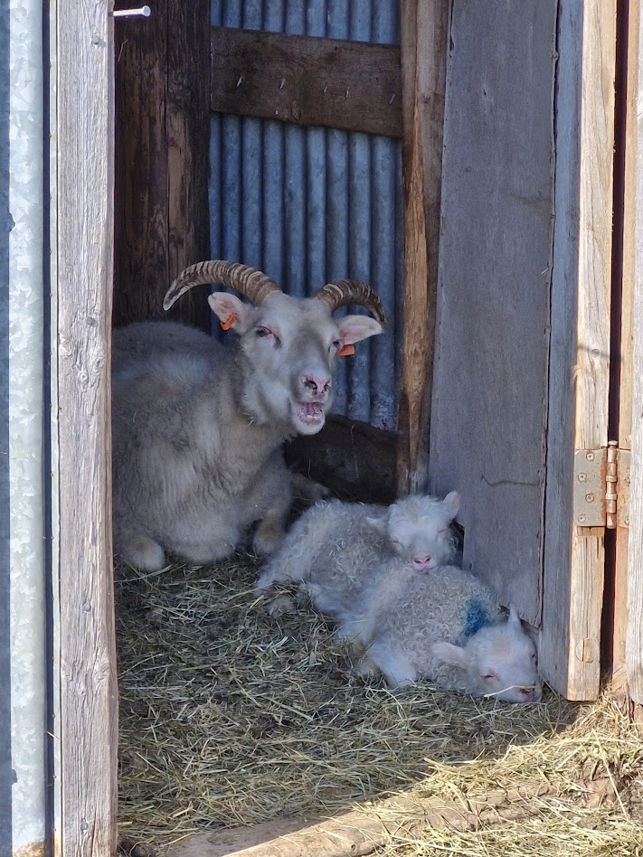

Þetta er síðan mín. Heldur lítilfjörleg í augnablikinu en er þó komin á netið eftir nokkuð bras.
Robert Downey Yngri, feginn að þetta hafðist
Hér hyggst ég skrifa dálítinn texta svo að aðrir í náminu hafi eitthvað að lesa.
En augljóslega er ekkert skemmtilegt að lesa allan liðlangan daginn, það verða líka að vera myndir með.

Skemmtileg staðreynd, á þessari mynd eru þrjár kindur. Ef þú þekkir sauðfjárbónda
og vilt hrífa viðkomandi með kunnáttu þinni,
þá segirðu að þetta sé ær og tvö lömb. EKKI kind og tvö lömb.
Nema að viðkomandi sé bóndi sem ruglar þessu líka saman,
sem er reyndar ótrúlega algengt.
Og ef þú hefur einhvern tímann heyrt um heimalninga þá má líka vekja athygli á því
að það er
hinn rétti ritháttur, ekki heimalingar. En það gildir reyndar það sama um það varðandi ruglinginn hjá bændum sjálfum.
Haldið áfram að fylgjast með hér til að læra klikkaðar staðreyndir um kindur,
eða eitthvað allt annað.